|
(click to enlarge)
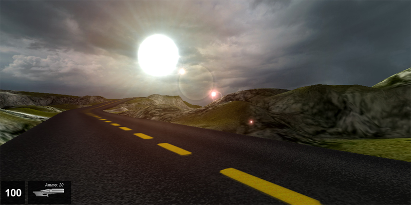
Introduction
The Mesh Road editor will help you create a solid mesh road structure upon your terrain. A mesh road is actually a 3D model representation of your road and is not solely dependent upon the terrain height. A mesh road can be raised above the terrain, or suspended between hills unlike a decal road, which painted on the surface of your terrain as a texture, and must follow the terrain exactly. Decal roads are created with the
Decal Road Editor.
(click to enlarge)
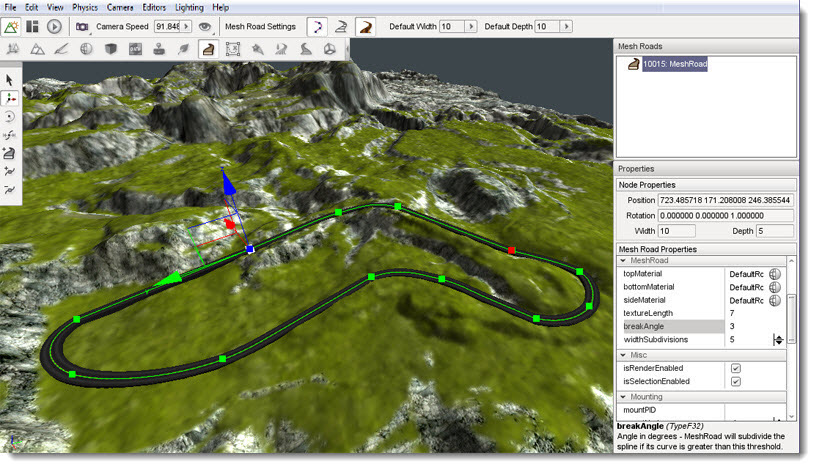
Setup
To use the Mesh Road Editor we will need some terrain to place our road upon. From the Toolbox, create a new project using the Full template, and then load the Empty Terrain level. This level has an adequate sample terrain to use when following this article.
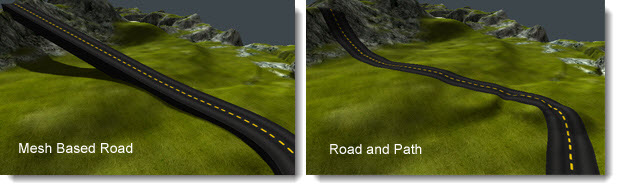
Interface
To access the Mesh Road Editor press the F9 key or activate it from the main menu of the World Editor by selecting Editors>Mesh Road Editor:
menu>Editors>Mesh Road Editor
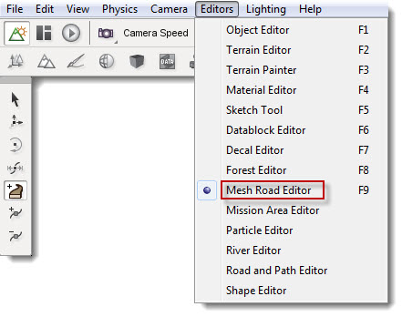
Alternatively you can click the Mesh Road icon from the World Editor Tool Selector Bar:
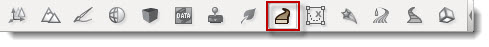
Whenever the Mesh Road Editor is active three sections of the screen are updated to contain the editors tool.
On the right side of the screen are the Mesh Roads pane and the Properties pane. At the top is the Mesh Roads pane which contains a list of all the road meshes currently in the level, if any are present. At the bottom is the Properties Pane which displays the properties of the currently selected road mesh.
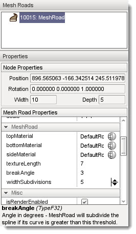
At the left of the screen the Mesh Road placement tools will appear and are used to create and modify road meshes
Hint: These tool bars are floating and can be moved to any part of your screen.
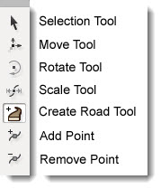
At the top of the screen in the World Editor Tool Settings bar, a new set of icons will appear.

These icons and their associated values will enable you to quickly set up the width and depth of the control points and modify the editor to show and hide some visual aids which can be used to guide your road placement.
Adding a Mesh Road
A road mesh is created by placing a number of control points across the terrain. Each point can be edited for Road height, Road width and Road depth. By adjusting these points we have full control over how our road will look
The default width and depth of control points can be set using the Default Width and
Default Height properties on the Tool Settings Bar at the top of the editor window. Any new road meshes will be created using these settings until you change their values again.
To create a new road mesh select the Create Road icon 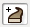 from the tool bar then click on the terrain with the left mouse button where you would like to start your road. Move the mouse away from the clicked location to see the results. Each time you click the terrain you will see three things: (1) a green square which represents the road location that you just placed; (2) a blue square which represents the next location that will be placed the road if you press mouse button again; (3) the surface of the road that will be placed the next time you click the button. Move the mouse to the next point on the terrain that you wish your road to travel to and then click again. Continue moving and clicking until you are finished with the initial placement of your road.
To complete the road placement process press the ESC key. This action will exit the Create
Road tool leaving your new road selected and ready for adjustments.
To abort a road creation operation without placing a road at all press the Esc key before selecting a second
road point. Once a second road point has been placed the only way to remove the
road completely is to delete it, as explained later.
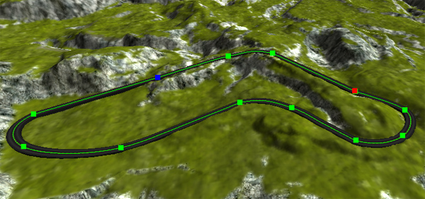
The new road will also show up in the Roads Mesh pane above the road Properties pane.
The Road Mesh Editor provides several tools for modifying roads after they have been created. If at any time you make a mistake with any tool, you can press CTRL+Z to undo it.
OOnce you have created your initial road you may need to edit some or all of the control points. This tool will allow you to directly select any created point for further editing. To activate the Selection Tool click its icon on the Tool Selector bar. Note that the Road Mesh Editor will automatically select this tool when you have finished creating a new road.
An entire road mesh can be selected by clicking anywhere on a road mesh other than one of its control points. This type of selection will result in the road being highlighted with a "spline", which is a curved line that runs along the center line of the road, and a series of green squares which represent the roads control points. There are no operations that can be performed on a road as a whole within the Mesh Road Editor. Selecting a road allows you to see its centerline and it control points for individual selection and manipulation. To perform operations on the entire road such as moving it to a new location use the Object Editors tools as with any other shape in your level.
Control points can be selected individually to adjust each point as necessary. To select a control point left click on one of the colored squares that represent a roads control points. The selected control point will turn blue.
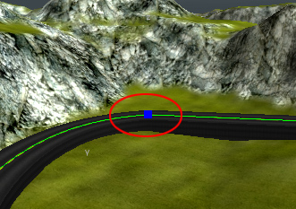
Selecting a control point also causes the Properties pane on the right of the screen to be updated to display the current property values of the control point. The Node Properties section will display the position, rotation, width and depth of the selected control point. Values can be directly entered into these fields to modify the point or the Move Tool can be used to manipulate the point using the mouse.
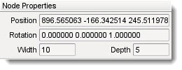
If at any time you are unhappy with the placement of a selected Road Mesh control point you can use the Move Tool to adjust its position. To activate the Move Tool click its icon 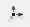 in the Tool Selector bar. The move gizmo will appear:
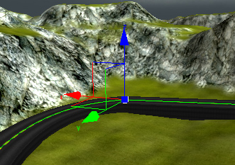
The move gizmo is used to move the road point to a new location. Left mouse click on any arrowhead then drag the mouse to move the point along that arrows axis. Release the mouse button to relocate the control point to that new location. Left mouse click on the colored square at the origin of the axes then drag the mouse to freely move the point to without regard to any axis.
The width and depth of a road can be directly adjusted at a selected control point by using the Scale tool. To activate the Scale Tool click on its icon on the Tool Selector. The scaling gizmo will appear:
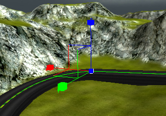
Left mouse click on the colored cube at the end of any axis then drag the mouse while holding the button down to increase or decrease the size of the road along that axis. Note that if you drag the blue cube to adjust the depth of the road you may not visibly see the adjustment take place because the road depth may be increasing down into the terrain. To adjust the width and depth at the same time left mouse click on the colored cube at the origin of the axes then drag the mouse while holding down the button. Release the mouse button to change the road to that new width and depth.
The Rotate Tool can be used to rotate a road at any selected control point. To activate the Rotate Tool click its icon on the Tool Selector. The rotate gizmo will appear.
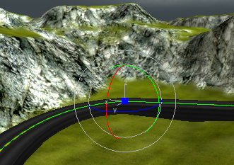
Left click on any colored circle then drag the mouse while holding the button down to rotate the roads surface around that axis at the control point.
Inserting Extra Points
The Insert Point tool can be used to add extra points in a road to create a smoother curve. In order to insert a new point into a road the road must first be selected. See the Selection Tool above for details on how to select a road. To activate the Insert Point tool once a road has been selected click its icon 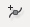 on the Tool Selector bar. To place a new point on the selected road click on the road where you would like the new point to be placed. A new point will be added to the road mesh and will immediately the currently selected point as indicated by the blue square.
Removing Points
The Remove Point tool can be used to delete a control from a road mesh. In order to remove a new point from a road the road must first be selected. See the Selection Tool above for details on how to select a road. To activate the Remove Point tool click its icon 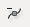 on the Tool Selector bar. To remove a control from the selected road point click on the control point. This will remove only the selected point leaving all the others in place. No adjustments will be performed on the other existing control points.
Properties
The Properties pane on the right side of the screen can be used to configure a Mesh Road:
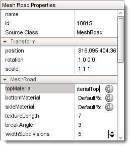
Transform
The transform section contains properties which control the placement, rotation and scale of the Road Mesh as a whole.
Position: The transform section contains properties which control the placement, rotation and scale of the Road Mesh as a whole.
Rotation: Indicates the rotation of the entire Road Mesh in the level.
Scale: Indicates the scale of the entire Road Mesh in the level.
Mesh
Road
The Mesh Road section contains properties which determine and control the textures used to display the Road Mesh.
To change any of the textures for the Road mesh click the globe icon to its right:
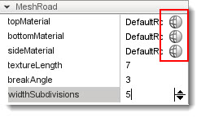
Clicking one of these icons you will open up the Material Selection window.
(click to enlarge)

Click on the material you want to use for the road mesh property then click the Select button. The material will be entered in the propertys field and will be used as the material for that portion of the Road Mesh.
Please see Material Editor section of the documentation for more information on the Material Editor.
Top Material: Indicates the Material to use for the top surface of the road mesh.
Bottom Material: Indicates the Material to use for the underside surface of the road mesh.
Side Material: Indicates the Material to use for the sides of the road mesh.
Texture Length: Indicates the size in meters of the texture measured along the road center.
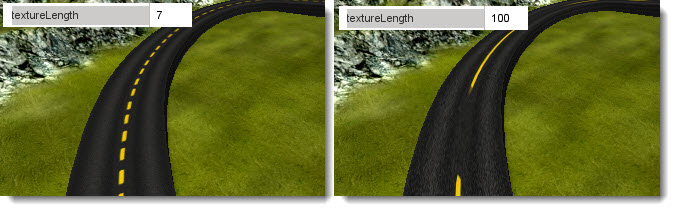
Break Angle: Indicates the angle in degrees that the mesh roads spline will be subdivided into if its curve becomes greater than this threshold.
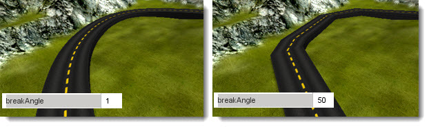
Width Subdivisions: Subdivide segments width-wise this many times when generating vertices.
Conclusion
In this article we covered the use of the Mesh Road Editor and its tool set for constructing a mesh based road for your projects. With practice and a bit of creativity you can create many types of roads, bridges, and railway tracks.
Remember to save your work often and have fun building your new highway.
|
{kind=link}
{kind=link}